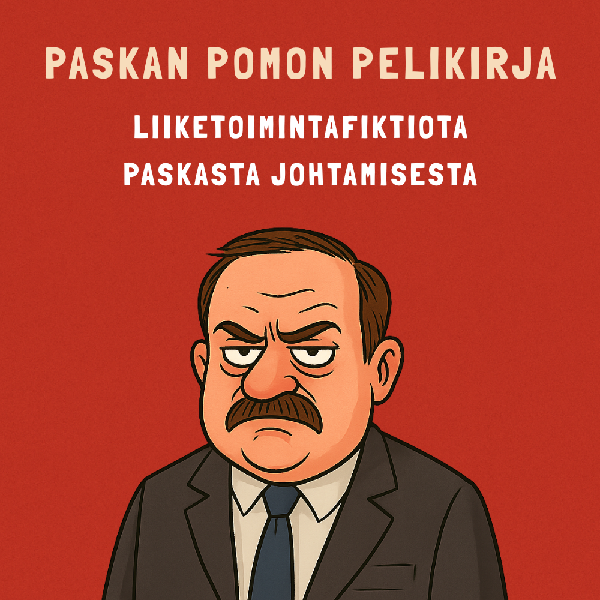

Miksi sama huono johtaminen toistuu talosta toiseen – ja miksi siitä kannattaa nauraa yhdessä?
Satiiria ja asiaa johtamisen sudenkuopista. Pohjana yli 350 suomalaista kertomusta työelämästä, johtamistutkimus ja omat mokani. Naurun kohde on käytäntö tai rakenne – ei kukaan salissa istuva.
45–60 min · suomeksi tai englanniksi · salissa tai etänä · alk. 2400 € + ALV
Juho Salmi
Tunnin mittainen setti siitä, mitä työpaikoilla oikeasti tapahtuu, kun asiat menevät pieleen: kukaan ei sano mitään, asia muuttuu matkalla kalvoksi, eikä kukaan lopulta päätä mitään. Esimerkit ovat kerättyjä tositarinoita, ja mukana on myös omia mokiani.
Mitä tunti ei tee: se ei muuta kenenkään käytöstä pysyvästi. Siihen tarvitaan enemmän kuin yksi tilaisuus – siksi keynoten perään voi ottaa työpajan, jossa asia viedään oman organisaation arkeen.
Keynote 45–60 min
Alk. 2400 € + ALV
Keynote + työpaja (n. 2 h)
Alk. 3400 € + ALV
Lopullinen hinta riippuu yleisön koosta, toteutustavasta ja räätälöinnin määrästä. Etätoteutus on edullisempi. Matkakulut pääkaupunkiseudun ulkopuolelle lisätään erikseen.
Pyydä tarjousKoska kyse ei ole yksittäisistä pomoista vaan rakenteista, kannustimista ja rikkinäisistä palautesilmukoista. Keynote käy läpi kolme tapaa, joilla palaute katkeaa – ja viiveen, joka tekee jokaisesta niistä pahemman.
Kukaan ei sano mitään, koska sanomisesta ei ole ennenkään seurannut mitään.
Asia sanotaan, mutta se muuttuu matkalla esitykseksi, mittariksi tai kalvoksi.
Kaikki tietävät. Kukaan ei päätä. Mitään ei poisteta listalta.
Yleisö voi olla 20 tai 500 henkeä. Toimii salissa ja webinaarina.
Satiiri on tässä aiheessa turvallisempi vaihtoehto, ei rohkeampi. Kun ulkopuolinen nimeää asian ja koko sali nauraa yhdessä, aiheesta puhumisesta tulee sallittua – ilman että kenestäkään tulee esimerkkitapaus.
Sama asia sisäisesti esitettynä olisi kannanotto. Ulkopuolisen esittämänä se on ohjelmanumero, josta keskustellaan vielä kahvilla.
"Juho on innostava esiintyjä, joka saa ajattelemaan johtamista ja muutosta uudella tavalla."
"Juho osaa kuunnella ja uskaltaa haastaa – hyvällä huumorintajulla!"
"Juho on erinomainen sparrikumppani muutoksessa – hän kirkastaa viestisi ja tukee sinua parempaan johtajuuteen."
Sopii, ja se on koko pointti. Setti ei osoita ketään sormella vaan käsittelee rakenteita ja käytäntöjä, jotka toistuvat organisaatiosta toiseen. Esihenkilöt nauravat yleensä eniten, koska he tunnistavat tilanteet.
Perusmitta on 45–60 minuuttia. Lyhyempi versio onnistuu, jos ohjelma on tiukka. Kysymyksille kannattaa varata oma aika ohjelmaan.
Kyllä, myös webinaarina. Etätoteutus on edullisempi, koska matkoja ei tule. Tallennusoikeudesta sovitaan erikseen.
Runko on sama, mutta esimerkit sovitetaan toimialaan ja tilaisuuden teemaan. Laajempi räätälöinti, esimerkiksi teidän omaan aineistoonne perustuva osuus, hinnoitellaan erikseen.
Suomeksi tai englanniksi.
Mikrofoni, videotykki tai näyttö sekä HDMI-liitäntä omalle koneelle. Muusta sovitaan tilaisuuden järjestäjän kanssa etukäteen.
Muuta kysyttävää? Laita viestiä.

Paskan pomon pelikirja perustuu 350+ tositarinaan paskasta johtamisesta ja sen tarkoitus on tehdä satiirin avulla paska johtaminen näkyväksi, jotta siihen osattaisiin puuttua paremmin. Samasta aineistosta ammentaa myös keynote.
Keynote on pääasia. Näitä teen valikoidusti silloin, kun ne sopivat kalenteriin.
Henkilökohtainen sparraus kehittyvälle johtajalle. Käännetään taipumukset vahvuuksiksi.
8 viikon ohjelma ryhmälle. Kalvosulkeisten sijaan harjoitellaan omassa arjessa.
Johdon, tuotekehityksen ja AI:n hyödyntämisen sparraus ja neuvonanto.